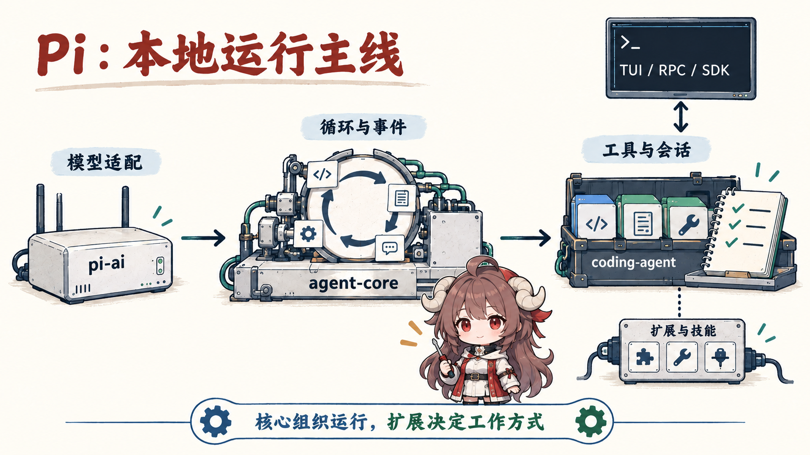
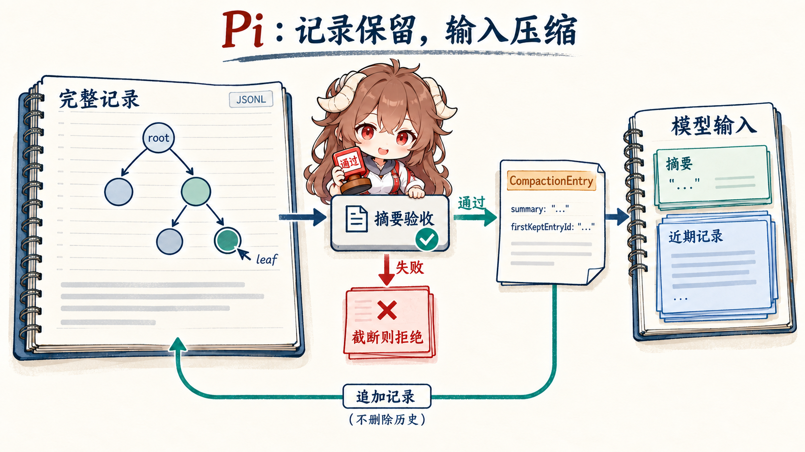

阅读契约：跟随一次“修复配置读取并跑测试”的任务，区分磁盘记录、当前分支与下一轮模型输入。重点是哪些修改会随会话恢复、压缩读取哪份内容，以及扩展怎样让工作继续。会话树和工具循环的基础见 Pi 总览。
本文依据 Pi 1.0.0 的公开实现。讨论的是本地 AgentSession 与 JSONL 会话路径；实验性的 pi-durable、客户端／服务端和 provider 内部缓存实现不在本篇范围内。下面的日志和记录都是用于解释机制的简化示例，不是性能实验。
一、一份长日志，为什么需要三种去向
任务开始时，模型读配置、改代码，再执行测试。测试返回很长的日志，其中只有最后几行解释了失败原因。用户希望以后还能回看完整输出；模型下一轮却只需要错误位置、失败断言和当前修改。如果为了节省 token 直接覆盖磁盘历史，排查依据就丢了；如果每次请求仍带上全部日志，工作上下文又会被重复输出占满。
Pi 把这两个需求分开处理：会话继续记录发生过的事，发给模型的内容则在请求前重新组装。为说明编辑发生在什么地方，把当前会话记作一条短路径：
U1：修复配置读取，保持公共接口
A1：模型请求执行测试，toolCallId = test-1
T1：test-1 的长日志
A2：模型解释失败，准备修复
E1：把 T1 在未来请求中的内容替换成短摘要这里有两个身份：T1 是会话 entry 的 ID，供编辑记录定位；test-1 是工具调用的 ID，供模型协议关联调用与结果。它们不能互换。后文一直跟着 T1：它写入哪里、怎样缩短、换分支后是否还生效，以及下一次压缩会读到什么。
| 表示 | 这次任务里包含什么 | 谁消费 |
|---|---|---|
| 原始会话记录 | U1、A1、T1、A2 与后来追加的 E1；T1 的原文不被 E1 改写。 | 会话存储、界面、导出与排查。 |
| 当前分支 | 从当前 leaf 沿 parentId 走到根的路径。 | 树导航、fork，以及当前路径的重建。 |
| 下一轮模型输入 | 在有效路径上选择压缩保留范围，再应用内容编辑与请求时转换。 | provider 请求。 |

二、把编辑也存成记录，才能恢复同一个决定
2.1 保留工具结果的身份，只替换它的内容
ContextEditEntry 保存一个目标 entry ID 和一项替换决定。replacement: null 表示省略整条目标消息；非空值只替换 content，不会把工具结果变成另一种角色，也不会改写原来的时间、用量等元数据。对长日志，更合适的形状通常是保留工具结果及其调用关系，缩短内容：
{"type":"context_edit","targetId":"T1","replacement":{"content":"测试失败：config.test.ts 的异步读取断言未通过；其余测试通过。"}}上例省略了新 entry 自己的 id、parentId 和 timestamp。它表达的是“以后展示给模型的 T1 使用这段内容”，不是一次再次执行测试，也不是声称原日志本来就这么短。省略整条 tool result 则可能留下尚未配对的 tool call；编辑接口不会替扩展设计一套完整的协议修复策略。应先判断目标在当前请求里承担什么作用，再决定替换还是省略。
// SDK 示例：targetEntryId 必须来自当前分支。
session.sessionManager.appendContextEdit(targetEntryId, {
content: "测试失败：异步读取断言未通过；其余测试通过。",
});
session.refreshContext();appendContextEdit() 会拒绝不存在、不在当前分支或不提供可编辑模型内容的目标。可编辑类型包括 user、assistant、toolResult 与 custom message。assistant 和 toolResult 的字符串替换会规范化为文本块数组。这是可恢复的内容选择，不是默认启用的自动日志摘要策略。谁选日志、如何生成可信摘要，仍由调用方或扩展决定。
2.2 编辑跟着分支走，不会改写其他实验
如果从 E1 之后继续，T1 贡献的是短摘要；如果用 /tree 回到 E1 之前再开一条路，这条路没有 E1，T1 就恢复原来的贡献。对同一个目标，当前有效范围里最后一条编辑获胜。这样的设计让“怎样组织上下文”也成为分支的一部分，而不是进程里的临时补丁。
U1 → A1 → T1 → A2 → E1 → U2 模型读取 T1 的替换内容
↘ U3 该分支没有 E1，读取 T1 原文
磁盘上的 T1：两条路径中都没有被覆盖实际构造顺序也有含义：buildContextEntries() 先选择当前分支与最新压缩保留范围，buildSessionProjection() 再在这个范围内收集编辑，并保留每条输出对应的源 entry。普通 custom 状态记录和省略记录可以没有模型消息；一条 compaction 记录则可能贡献系统状态和摘要。因此 entry 数量不能拿来当消息数量。
三、每次请求先从会话重建，再交给扩展转换
3.1 持久记录决定基础上下文
现在重启 Pi，或让下一轮紧接着运行，基础输入都应解释得通。只在内存数组里删除 T1 做不到这一点：磁盘还保留旧内容，恢复后就可能重新发送完整日志。Pi 把 SessionManager 作为基础上下文的来源，让这种改变必须表现为能重放的记录。
请求前重建 安装在 prepareRequest 上。已经选中的输入先进入记录，随后每次 provider 请求——包括首次请求——重新调用 buildSessionProjection()。可执行工具实现来自当前工具集合，模型看得见的声明则由消息里的工具状态表达。直接赋值 session.agent.state.messages 不再替换之后的请求历史；SDK 应通过会话记录、导航或恢复接口修改基础状态。
当前分支的原始 entries
→ 最新 compaction 与保留范围
→ context_edit：省略或替换内容
→ prepareRequest：安装重建后的基础上下文
→ context / context_with_system：本次请求的转换
→ convertToLlm：形成 provider 可接受的消息3.2 两类 context hook 的权限不同
请求时转换仍然存在，但不等于写回历史。emitContext() 先克隆消息，再运行 context handlers：它们只看到非 system 的对话内容；Pi 在每个 handler 后恢复提示与工具状态。这样，一个简单的截取操作不会顺手删除系统提示和工具声明。
随后运行的 context_with_system 则能看到完整消息序列，其输出按返回值使用。它适合确实需要重组系统消息的扩展，也要求扩展自己维护开头的系统状态；删除 leading system 会被报告，但 Pi 仍尊重返回结果。接口提供了更大的修改范围，没有承诺任意转换都能成为有效请求。
| 需要的行为 | 使用什么 | 恢复后的含义 |
|---|---|---|
| 持久地缩短 T1 | 追加 context_edit | 重建当前路径时重新应用；原文仍在。 |
| 仅为本次请求过滤对话 | context | 不会自动产生一条持久编辑记录；以后仍需执行转换。 |
| 改动系统提示或工具状态的完整消息表示 | context_with_system | 调用方负责有效的系统状态和 provider 形状。 |
四、压缩也必须读编辑后的内容
假设 T1 已经缩短，后面又积累了很多测试结果，触发了整段上下文压缩。如果压缩器回头直接读取原始 T1，刚做的减压就失效了：被排除的内容会进入摘要请求，甚至通过摘要再次带回来。压缩所处理的材料必须与当前模型输入使用同一套选择规则。
prepareCompaction() 从 buildSessionProjection() 开始，在编辑后的消息贡献上计算保留范围和摘要材料。findProjectedCutPoint() 仍避免把 tool result 当成独立切点；只有近期预算确实跨过一个大 turn，才考虑对早期 turn 前缀单独做检查点。原始 entry 的 ID 保留下来，用来把最终 firstKeptEntryId 关联回会话。

用量估算也要跟着变。一次较早的 assistant usage 描述的是编辑前的请求，不能继续拿它证明当前上下文仍然很长。estimateProjectedContextTokens() 会检查用量记录是否晚于最近一次 context_edit 或 compaction；不再有效时，改用当前消息估算。之后新的请求 usage 可以重新成为依据。历史账单没有被改写，变化的是“下一次请求有多大”的估计。
同样，重试时放弃的 assistant 尝试可以通过持久省略退出后续输入，而不是从界面里消失。后续压缩继续处理当前有效内容，并携带上一份摘要和保留尾部。不要把追加式存储理解成缓存保证：替换早期消息仍可能改变 provider 接收到的前缀；是否命中缓存，要看实际请求与 provider 返回的用量。
五、写入一条记录，怎样真正带来下一轮
5.1 回合边界可以提出修改，也可以要求继续
日志摘要已经准备好，但模型刚输出了最终回答。这时扩展发现仍缺少一次验证，只写入“还需要验证”的备注，并不保证模型会再运行。记录变了、请求是否继续，是两个决定。Pi 在 turn_end 和 agent_before_settle 提供可返回草稿与续跑决定的扩展边界。前者处理一个完成的回合；后者处理会话准备进入稳定空闲前的工作。
emitBoundary() 按顺序调用 handlers。每个 handler 得到此前累计的 entries、续跑决定和重建预览；返回 entries 会替换累计列表，因此追加时需要保留已有草稿。runtime 重新预览、检查草稿，最终把有效草稿按序提交。无效草稿不会因为声明了 continue 就被强行安装。
扩展判断：本分支还缺一项验证，且没有重复发起
→ 保留 event.entries，追加一条 custom_message 验证指令
→ 返回 continue: true
→ runtime 预览并检查草稿，再按序写入
→ 若重建后的输入或待处理消息允许继续，发起后续请求这是扩展策略的形状示例，Pi 不会默认在每个回答后安排验证。扩展还应把“已经发起过”存成分支状态，否则每轮都继续，会形成无法自行结束的循环。只写普通 custom 元数据也不能凭空制造模型输入；能否继续取决于新的上下文和等待中的消息，而不是 handler 返回了一个布尔值。
5.2 continue 保证一次请求，不额外制造一次请求
低层 runLoop 在 assistant 与工具结果完成后执行 finishTurn，随后发送 turn_end。正常路径上的 end 结束当前 run，保留未消费的输入队列；continue 则要求再有一次 provider 请求。如果工具结果、steering 或 follow-up 已经安排了请求，它们就满足这个要求；只有都没有安排时，才补一次仅使用当前上下文的请求。
错误与取消仍是低层循环的硬退出，即使调用了 finishTurn，也不采用其继续决定。外层 AgentSession 还有恢复与收尾逻辑。agent_before_settle 提交草稿后再次判断有效输入和队列；不能把低层 agent_end 当成整个会话已经稳定空闲，更不能把任一事件当成任务质量通过的证明。
六、把同一份日志完整重放一次
| 发生的事 | 留下的记录或行为 | 下一轮有什么不同 |
|---|---|---|
| 测试产生 T1 | 原始工具结果追加到会话。 | 模型最初可以读取该结果。 |
| 扩展追加 E1 | E1 指向 T1，保存替换内容。 | T1 的身份保留，内容缩短。 |
| 关闭后恢复 | 从当前路径重建，重新应用有效的 E1。 | 不会依赖上个进程的数组补丁。 |
| 回到 E1 前另开分支 | 新路径没有 E1。 | T1 恢复原贡献；文件副作用不回滚。 |
| 长会话再次压缩 | 编辑后的内容进入摘要选择和 token 估算。 | 模型改读摘要与保留尾部。 |
| 扩展发现验证缺项 | 有效草稿提交；合法的继续决定触发后续请求。 | 获得继续工作的输入，但仍需实际验证结果。 |
使用这些接口时，最有效的验收也围绕这条路径：比较编辑前后的 provider 消息、确认原始 T1 未改写、重启后重建同一输入、切到另一分支验证隔离，再检查压缩材料没有把省略内容带回来。最后确认验证只发起一次，并且失败、取消和显式停止能结束工作。仅看到界面里出现了一条摘要，证明不了这些性质。
下一篇 Pi Codemode 把选择时机继续前移：某些大结果可以先在脚本里筛选，根本不必完整进入模型消息。它与本篇的区别在于数据何时进入上下文；两者都需要把“模型读到什么”与“外部世界已经发生什么”分开。